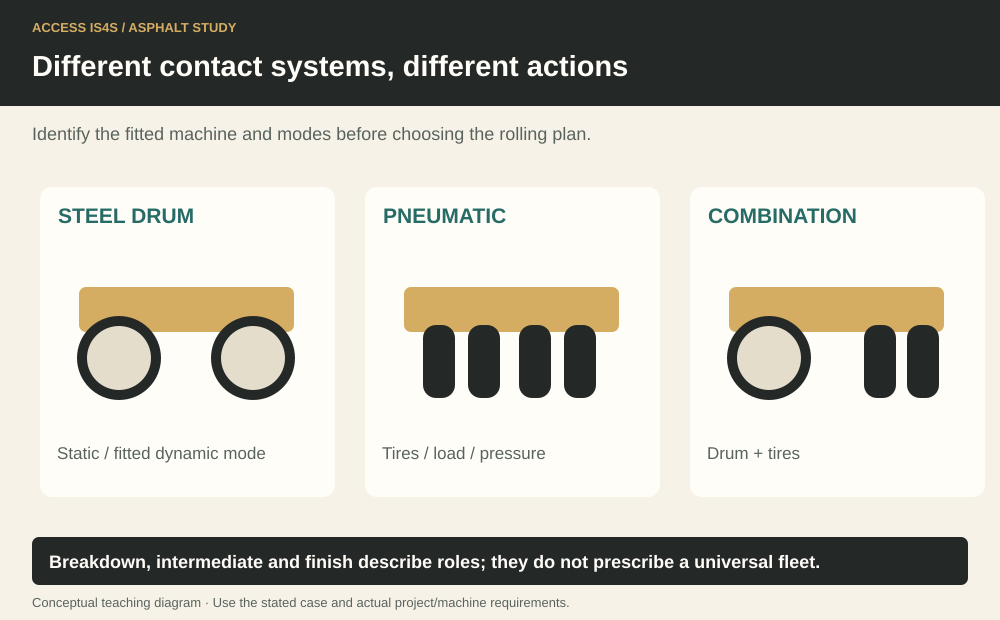
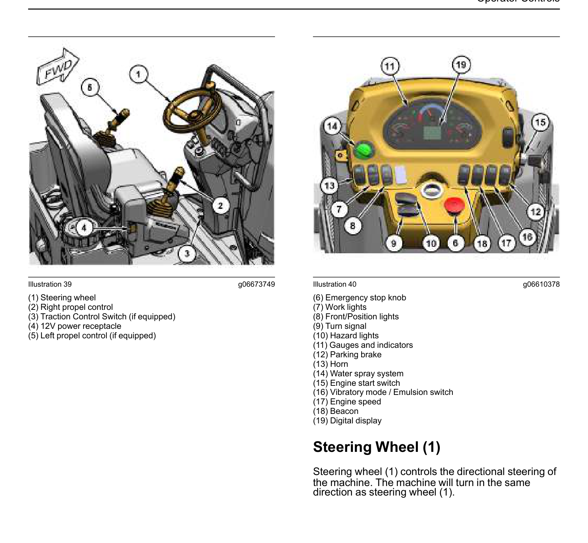
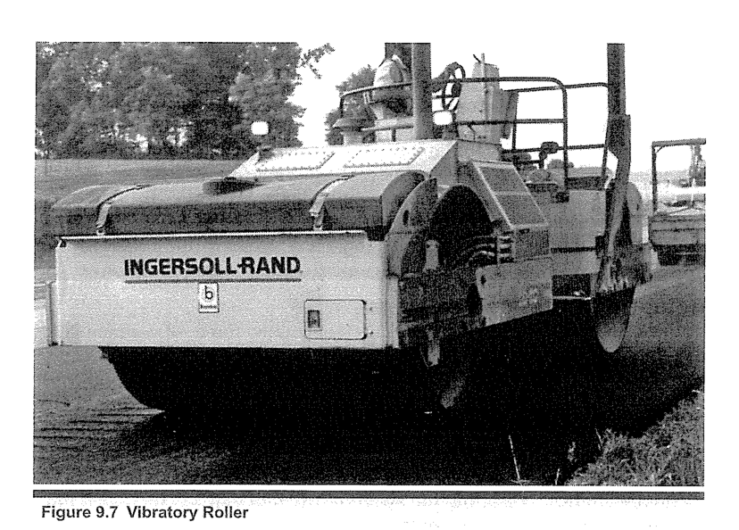

Study chapter · Outline L1
Compaction equipment
Compaction equipment changes the mixture’s density and surface through a planned application of load and, where fitted, dynamic energy. Choose equipment to suit the mixture, support, production and finished requirements.
Learning step 1
Types of Compaction Rollers
Manufacturers such as Caterpillar, Ammann, BOMAG and Dynapac offer different roller families and configurations. Compare drum width, operating mass, tire/drum arrangement, working modes, production and access. A small utility roller and a highway tandem roller are not interchangeable simply because both compact asphalt. Confirm the actual model, serial range and OMM. Equipment choice and the rolling plan belong to the responsible crew/quality process.
Different contact systems, different actions

Learning step 2
Major components of compaction equipment
A steel-drum roller may work statically or with fitted vibration/oscillation. A pneumatic-tired roller applies load through tires; tire condition, pressure, temperature and ballast affect its action under the manufacturer and project requirements. Do not invent tire pressures. A combination roller has both drum and tire contact. Identify engine, travel/steering controls, articulation joint, drums/tires, water/spray system, scrapers, vibration controls, ROPS and seat belt where fitted. Components and permitted modes vary by model.
Learning step 3
Basic functions of compaction equipment
Breakdown rolling applies early compaction behind the paver within suitable mixture conditions. Intermediate rolling develops required density and surface condition as planned. Finish rolling removes marks and completes the surface without damaging it. One machine may perform more than one role where the plan supports it; role names do not prescribe a universal machine count or pass sequence.
Locate all 19 original roller-control callouts

Learning step 4
Emerging technology
Oscillation applies a different dynamic action from conventional vertical vibration. Intelligent compaction, mapping and temperature displays can help monitor coverage and conditions. Their displayed values are not automatically the contract’s acceptance density. Confirm what each measurement represents and how it is calibrated/validated. Technology supports operator judgement and quality testing; a colourful coverage map does not prove every point meets specification.
Vibratory roller

Try it and explain your thinking
Explain and apply the idea
Identify drum, scraper, spray bar, articulation joint, ROPS and seat belt on the supplied model figures.
Skills you use: Reading, Communication.
A fictional effective coverage width is 1.4 m over a 70 m strip
A fictional effective coverage width is 1.4 m over a 70 m strip. Find area for one full-length coverage strip.
Skills you use: Numeracy, Problem solving.
Ask an AI to compare static, vibratory and oscillatory action, then audit its table.
Ask an AI to compare static, vibratory and oscillatory action, then audit its table.
Skills you use: Digital, Writing, Creativity and innovation.
Show the skill in supervised practice
Machine/model/serial or classroom case: __________ · Manual/procedure and revision: __________ · Date/location: __________ · Learner/observer: __________
Record each criterion as 0—not yet demonstrated, 1—with task-solving support, or 2—independently under the stated conditions. Mark unobserved criteria separately; do not convert missing opportunity into a zero. The assessor determines the required repeat practice and applicable qualification requirements. A critical failure means hold, correction and reassessment regardless of the numerical result. Use safe simulations for classroom reasoning; actual operation requires the selected equipment, approved conditions and competent supervision.
| What the observer checks | Result | Evidence |
|---|---|---|
| Critical: Safe access, surroundings and communication maintained. | Pass / hold | Observation: __________________ |
| Critical: Required energy, heat, movement and public-access controls maintained for the actual task. | Pass / hold | Observation: __________________ |
| Identify roller families and actual components. | 0 / 1 / 2 | Evidence/help: ________________ |
| Explain breakdown, intermediate and finish roles. | 0 / 1 / 2 | Evidence/help: ________________ |
| Distinguish monitoring displays from acceptance tests. | 0 / 1 / 2 | Evidence/help: ________________ |
Actual conditions and support: __________________________
Feedback, next practice and authorized release/status: __________________________
Sources and further reading
- SkilledTradesBC. (2016). Asphalt Paving/Laydown Technician program outline, L1, printed p. 93; source PDF pp. 95–95.
- Caterpillar. (Various editions). Original machine component figures, with publication/page/model records. Open publication.
- Caterpillar. (2012). Guide to Asphalt Compaction (QEBQ1583). Asphalt compaction concepts and equipment; project and machine application require the applicable documents. Open publication.
- Asphalt Institute. (2007). The asphalt handbook (7th ed., MS-4), Chapter 9: Hot Mix Asphalt Compaction; source PDF pp. 447–478. Open publication.
- Caterpillar. (2022). CB2.5 GC, CB2.7 GC, CC2.7 GC Utility Compactors — Operation and Maintenance Manual (M0130633-02 (August 2022)). CB2.5 GC: XGC 1-UP, 640 1-UP; CB2.7 GC: BT7 1-UP, 641 1-UP; CC2.7 GC: 2C7 1-UP, 642 1-UP. Open publication.
Figure-specific pages, editions and original contributors are credited beside each image. Current project requirements and the matching machine instructions determine practical use.